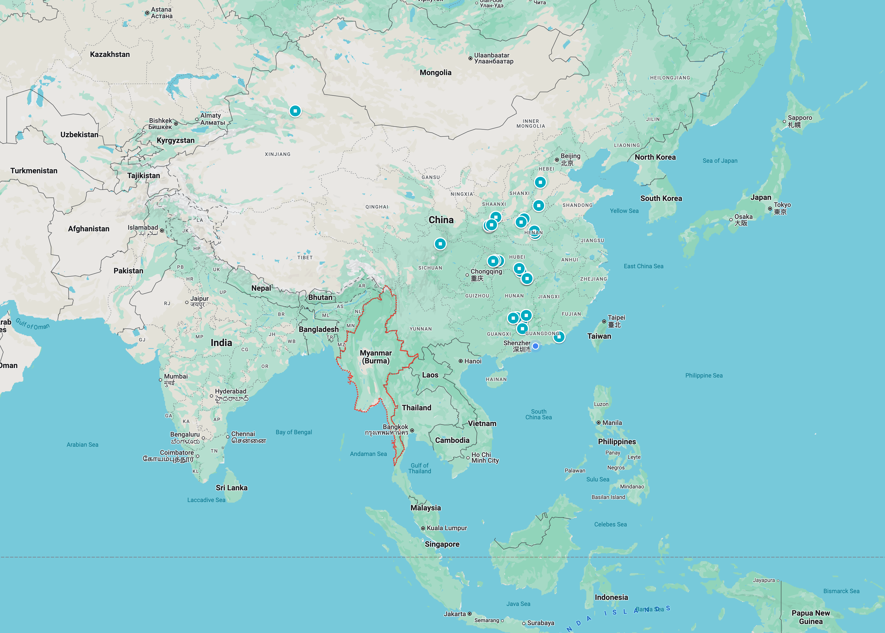

第9章 苏联和越南的威胁：1978–1979
1977年夏天邓小平重新掌管国防和外交工作后，面对着两个首当其冲的问题：一是对抗苏联和越南的威胁，维护国家安全；二是为争取外国对中国现代化的帮助打下基础。1为了减少苏联的军事威胁，他努力加强与邻国的关系，阻止苏联的势力扩张。为了给中国的现代化争取帮助，他转向日本和美国。为了达成这两个目标，他在1978年1月后的14个月里出访多国，访问的国家数量超过了他一生其他时间到访国家的总和。在这些出访中，他改善了中国与亚洲大陆邻国的关系，使中国的开放程度超过了1949年以后的任何时期。他使中国不可逆转地走上了积极参与国际事务、全面交流思想的道路。这五次出访中，他去了缅甸、尼泊尔、朝鲜、日本、马来西亚、泰国、新加坡和美国。在这14个月里，邓小平还同日本签订了和平友好条约，与美国进行了关系正常化谈判，并将中国带入了一场对越南战争。
邓小平担负起外交职责
1977年夏天恢复党内工作时，邓小平并不想主持外交事务。有一次他甚至说，他不愿承担这项工作，因为它太耗神了。可是中国需要邓小平主管外交，不仅因为30年来他几乎一直陪同毛泽东或周恩来接见外宾，而且他本人从1973年夏天到1975年底就在毛泽东和周恩来指导下负责外交事务。他的同事都认为，周恩来去世之后，在外交知识、战略思想、与外国领导人的个人关系以及既争取外国人的善意又坚定地维护中国利益这些方面，其他领导人都难以与他相比。中国的外交官可以具备有关其他国家和以往谈判的丰富知识，例如黄华2——1976年12月他取代乔冠华成为外交部长，但往往缺少作出重大政治判断的自信，也没有足够的地位与外国领导人平等相处。
外交一向是中共最高领导人的核心工作。毛泽东和周恩来在外交方面都是世界顶级的战略家，他们充满自信，能够与外国领导人平等地打交道。在1978年以前，虽然中国仍然比较封闭，但他们都把外交视为大事，亲自承担着领导外交的工作。
毛泽东会见外国人时散发着帝王般的自信，谈论哲学、历史和文学，纵论天下大势。周恩来在国内外会见外宾时，则表现得博学而儒雅，他态度亲切，体贴入微，对客人照顾得十分周到。他既谈大事，也愿意讨论细节。
像毛泽东和周恩来一样，邓小平对国家有着出于本能的忠诚，具有战略眼光和维护国家利益的坚定立场。也同他们一样，邓小平在会见外国人时，不但要完成既定的会谈内容，还会努力摸清来访者的性格和目的。但是，与毛和周相比，邓关注与中国有关的重大问题时更有系统性，也更加坦白直率。在会见外宾前，邓小平不接受口头的情况简介；他会阅读下属准备的有关来访者及其来访目的和应讨论议题的文件。像过去毛和周的情况一样，通常会有一名外交官先行会见外宾，由他把来访者的意图告知邓小平，邓小平再接见他们。
驻京外交官都十分尊重邓小平，认为他是个可以打交道的人。外国来访者也很喜欢邓小平，他机智、专注，讲话直言不讳，愿意解决问题。乔治・布什在1975年担任美国驻华联络处主任时经常与邓小平见面，他说：”他态度明确，讲话直率，使人不会误解他的意思。3黄华曾多次陪同毛泽东、周恩来和邓小平会见国外的来访者，他在谈到邓小平时说：”他能很好地抓住主要问题，深刻理解并简单说明问题的实质，果断并且直截了当地作出判断和决定。”4
毛泽东对中国怀有过于宏大的、超越了现实国情国力的构想。邓小平与毛不同，他一向很现实，承认中国的弱点和落后。但是他也具备基本的自信：他知道自己代表着一个地大物博的国家，它有着悠久而伟大的文明史；他的力量不但来自他个人战胜重重挑战而取得成功的经历，也来自于他对国内和国际事务的全面了解。和苏联的一些领导不同，他无意讨好洋人。无论洋人如何摆出泰山压顶的气势，他从不自觉矮个半截。相反，他在与外国领导人打交道时，把他们视为解决问题的伙伴，很快就直奔主题。由于没有心理负担，他便能既不畏强也不凌弱地坚决抵制他认为不符合中国利益的外来压力。
但邓小平并非总能展示这种自信。1974年他第一次访问纽约，在联合国大会发言时，他的讲话让人觉得拘谨而刻板，因为他知道自己的部下会把他的一言一行汇报给毛泽东。他在1975年时仍然很小心，因为在所有重大外交政策问题上他仍要得到毛泽东的首肯。邓小平也承认，周恩来的知识和经验远在他之上。但是毛、周去世之后，他就可以自主地与外国领导人谈判，不用担心他人的意见。1977年年中，他重新主持外交工作后，延续了他在1975年的政策。但是在这一年7月之后见过他的外国官员觉得，他变得更加从容自信，更愿意就广泛的外交政策问题表明自己的看法。
从1977年7月到1979年底，他在同外国领导人会谈时总会恭敬地提到”华主席”。但是自1977年他复出，外国客人就从未怀疑过他是中国外交政策的当家人。他不但是代表中国的谈判者，而且是伟大的外交战略家。虽然他也阅读外交官的报告，但在重大决策上，他更多依靠自己老到的判断力。他之所以能表现得轻松自如，是因为他对当下的问题与总体战略的关系有着可靠的理解，对自己和对手交涉的能力充满自信。在与外国人的会谈中，他逐渐形成了自己的独特风格：先说几句机智的开场白，对外国客人表示欢迎，然后迅速专注于他要讨论的议题，直率、明确、强而有力地表明自己的观点。
以苏联为大敌
邓小平的战略分析起点和毛泽东是一样的：分清主要敌人，广结盟友与之对抗；分化敌人的盟友，使其疏远敌人。到1969年，苏联显然已经取代美国成为中国的主要敌人——这一年7月尼克逊总统在关岛宣佈，美国不会涉足亚洲大陆的战争；而3月和8月的两次边境冲突后，中苏关系依然剑拔弩张。
1975年美国从越南撤军后，苏联和越南便趁此机会，填补了美国撤军留下的空白。在邓小平看来这加剧了对中国利益的威胁。他的结论是，苏联决心取代美国成为全球霸主，越南则想成为东南亚的霸主。因此中国要与大致处于同一纬度的另一些国家——美国、日本和欧洲各国——形成对抗苏联的”一条线”。同时，中国要努力使另一些国家——比如印度——疏远苏联。
1977年邓小平复出时，苏联和越南正加紧合作，扩张它们在东南亚的势力，这让邓小平感觉到日益增长的威胁。越南允许苏联使用美国在岘港5和金兰湾6建造并留下来的现代化军港，这将使苏联军舰能够自由出入从印度洋到太平洋的整个地区。越南还建设导弹基地，装备了瞄准中国的苏制导弹。苏联则向基地运送人员和电子设备，为其提供技术支持。苏联沿中国北部边境驻有重兵，还预谋入侵阿富汗，而中国西部的印度也在跟苏联合作，这使局势变得更加危险。同时，越南已经控制了老挝7，并且正在策划入侵中国的盟友柬埔寨8。邓小平，像下中国围棋的棋手一样，认为这些国际变化等于是在不同地点佈下棋子，欲将对手围而歼之。在他看来，中国正处在四面受敌的危险之中。
在所有这些事态的发展中，邓小平认为苏越结盟对中国的威胁最大，因此假如中国能对越南这颗棋子大胆下手，就能最有效地阻止苏联的包围。他说，越南人赶走美国兵之后，开始变得趾高气扬。1978年5月布热津斯基9与邓小平进行关系正常化谈判时，邓小平对越南背信弃义的严厉谴责曾让他感到吃惊。1978年见过邓小平的另一个外交官也说，只要一提到越南，邓小平就不由自主地发怒。10
邓小平与越南的关系
无论从个人还是国家的角度来说，邓小平都有被越南出卖的感觉，因为中国曾为越南反抗美国作出了巨大牺牲，而50年来他跟越南人也有着深厚的个人交往。半个世纪以前邓小平在法国勤工俭学时，就与越南人一起参加了反抗法国殖民主义的斗争。邓小平和胡志明（Ho Chi Minh）在上世纪20年代初都在法国，他们两人当时是否见过面，已经无从考证，但邓小平1930年代末确实在延安见过胡志明。周恩来则在法国时就认识胡志明，1920年代中期他们还是黄埔军校的同事。邓小平在1920年代末被派往广西时，曾数次取道越南，得到过越共地下党的协助。在1940年代和1950年代初，邓小平和越南共产党人曾是争取共产主义胜利的革命战友，1954年以后他们却又成了致力于维护各自国家利益的政府官员。
邓小平的前部下韦国清将军也与越南渊源很深。韦国清曾在广西省和淮海战役中供职于邓小平手下。他是广西壮族人，邓小平1929年在他的家乡创建过革命根据地。邓小平后来对新加坡总理李光耀说，1954年越南跟法国人打仗时缺少大规模作战的经验，中国派去的韦国清将军在指挥奠边府战役11中发挥了关键作用；越南人打算撤退，但韦国清拒绝撤退。越南北方的防空任务也是由中国飞行员执行的。
邓小平理解中越关系的复杂性——因为国家利益发生了变化，需要用新的眼光重新考量。他知道，由于数百年来中国的入侵和占领，越南爱国者把中国视为大敌。他很清楚，越南想从中国和苏联双方都得到尽可能多的援助，因为当时两国都极力想将越南向自己拉近。他还明白，尽管中国认为韦国清将军和中国志愿部队对奠边府大捷作出了举足轻重的贡献，但越南人仍然对中国感到失望，因为当他们在1954年日内瓦和会12上为统一国家而努力时，中国没有为他们提供支持。13邓小平十分清楚，胡志明在1965年写下的遗嘱中说，越南要成为主宰印度支那14的强国，而中国并不认同这种说法。15他还知道，中国从1972年开始牺牲中越友谊跟美国改善关系，这也让越南人心中不快。
但是，中国一向十分慷慨地帮助北越对抗美国。当越共总书记黎笋（Le Duan）在1965年4月18至23日访问北京，为了对付美国对北越不断升级的空中打击寻求帮助时，刘少奇主席对黎笋说，无论越南需要什么，中国都会尽力提供。在这次访问中，邓小平去机场迎接黎笋，陪同刘少奇与他会谈，又去机场为他送行。16此后，中国在国务院下面设了一个协调援助北越的小组，其成员来自政府的21个分支机构，包括军事、运输、建设和后勤等等。根据中方纪录，从1965年6月到1973年8月，中国向越南共派出32万志愿部队，为其提供防空武器、军械修理、公路和铁路建设、通讯、机场维护、排雷、后勤等各种支持。最高峰时，同时驻扎在越南的中国军队达到17万人。据中方的报告，中国在越南战争期间的伤亡人数约为4,000人，但有些中国学者估计伤亡者数以万计。邓小平在1978年对李光耀说，美国在越南期间，中国向越南运送的货物按当时价格计算在100亿美元以上，甚至超过了南朝鲜战争时中国对朝鲜的援助。17随着援越规模的扩大，中国把自己的工程兵、防空炮兵和辅助物资也都运往越南。18
邓小平在1965年曾代表中国政府提出，如果越南人结束和苏联的关系，中方可以大幅增加援助，但是遭到了越南的拒绝。当美国加大对北越的轰炸力度时，越南人为了自卫，更多地转向苏联这个拥有高科技和现代武器的国家；在中苏争执中，苏联也利用这种实力向越南施压，使其向自己靠近。
越南在1960年代中期不再批评”苏联修正主义”，中国为了表明对越南与苏联加强关系的不快，从越南撤出了一个师。中越之间的嫌隙越来越深。当1966年周恩来和邓小平会见胡志明时，他们对越南人的抱怨有深切感受：胡志明说，中国军队的傲慢表现就像历史上经常入侵越南的中国军队一样。邓小平回答说，驻扎在那里的10万中国军队只是为了防范西方可能的入侵，周恩来则提出撤回军队。19但是越南没有要求他们撤军，而中国继续向越南提供大量军需物资和武器装备。
胡志明能说一口流利的汉语，在中国住过多年，他努力与中国和苏联都保持良好的合作关系。但是1969年9月他去世后，中越关系开始恶化，中国的援助也随之减少，最后中国从越南撤出了军队。20而中国在1972年尼克逊访华后改善了中美关系，随后减少了对越援助，越南人把这视为中国人背叛越南抗美战争的一个标志。21
美国人撤出越南后，苏联为重建这个饱受战火蹂躏的国家慷慨提供了大规模援助。与此相对照，在1975年8月13日，即美国人撤出越南后不久，身患癌症、面色苍白的周恩来在医院里对越南最高计划官员黎德寿（Lê Thanh Nghi）说，中国已经无力为越南的重建提供大量援助。中国被文革搞得元气大伤，自己的经济也捉襟见肘。周恩来说：”你们越南人得让我们喘口气，恢复一下元气。”但是就在同一个月，中国其他官员欢迎了柬埔寨副首相的到来，并答应在未来五年为他们提供十亿美元的援助。22那时苏联正在与越南加紧合作，中国则与柬埔寨合作以阻止越南在东南亚称霸。邓小平后来对李光耀说，停止援越不是因为中国难以同苏联的援助数量一争高下，而是因为越南人要在东南亚谋求霸权。苏联很愿意支持越南的野心，它想从中渔利，但中国不想这样。
一个月后的1975年9月，越南最高领导人、越共第一书记黎笋率团访问北京，希望避免与中国彻底决裂。他们想得到中国的部分援助，以便对苏联保持一定程度的独立。处在毛泽东监督下的邓小平接待了这个代表团的来访。他和黎笋有着一样的目标，不要让两国的关系彻底闹翻。邓小平去机场迎接代表团，在宴会上致欢迎辞，与黎笋连续会谈，又去火车站为他们送行。23他促成了一份在9月25日签署的协定，向越南提供一小笔贷款和为数不多的物资援助。24假如邓小平在1975年以后仍然任职，他也许能暂时缓和越南人对中国由来已久的敌视和两国当时的分歧。然而在邓失势后，”四人帮”采取了更强硬的立场，要求越南谴责苏联的”霸权”。25中国激进派的这种要求对黎笋来说太过分了，他拒绝签署联合公报，未举行常规的答谢宴会就离开了北京。26
一个月后黎笋抵达莫斯科，在那儿如愿得到了苏联长期援助的承诺。越南人原本不想完全依附于苏联，但它迫切需要为重建国家获得帮助。黎笋没有中国（或其他国家）做后盾去抵制苏联的要求，只好签署了支持苏联外交立场的协定。27越南与苏联的这些协议把越中关系推向绝境，促使中国加强了与柬埔寨的关系。28
1977年初越南驻华大使说，假如邓小平重新掌权，他会更加务实地处理分歧，中越关系将得到改善。如果说中国在邓小平1975年下台后有什么外交政策的话，那么这种外交政策也只是充斥着革命口号，既缺少眼光，更不讲究表达技巧。29激进派实际上切断了中越的关系，把越南进一步推向苏联。邓小平失去外交控制权后不久，越南在1975年11月9日宣佈召开政治协商会议，为南北统一作准备。其他共产党国家都发了贺电，唯独中国没有。会议三天后，《光明日报》一反邓小平承认南沙群岛存在争议的态度，发表了一篇措辞强硬的文章，把南沙群岛称为中国”神圣领土”的一部分。30（1976年4月邓小平被正式撤职后，受到的批判之一正是他支持就南沙问题与越南谈判。）311976年，东欧各国、朝鲜和苏联应越南的请求全都答应援助越南，只有中国除外。邓小平和黎笋维持两国关系的努力，在激进派的手里付诸东流。
毛泽东逝世和”四人帮”被捕后，有过一段中越两国领导人试图改善关系的短暂插曲。1976年10月15日，”四人帮”被捕后没几天，越南官员期望中国现在会采取更加友好的政策，为他们的下一个五年计划提供一定帮助，便向北京提出了提供经援的请求，但是却没有回音。1976年12月，有29个兄弟共产党派出代表团去河内参加了越共代表大会，而华国锋领导下的中国甚至没有对此邀请作出答复。1977年2月，邓小平复出前五个月，北京对一个来访的越南代表团简单地重申，以后不会再提供任何援助。32
中越冲突的前奏
如果邓小平在1975年底没有被赶下台，他也许能避免中越两国的彻底决裂。但是他在1977年7月恢复工作后面对的局面已经改变：苏越合作有增无减，中国和这两个国家的关系都已严重恶化。
邓小平复出的几个月前，越南的武元甲将军（Vo Nguyen Giap）于1977年3月和5月两次前往莫斯科，与苏联签署了扩大双方军事合作的协议。33苏联开始向金兰湾和岘港的海军基地派出人员，这预示着苏联军舰不久将会游弋于中国的所有海岸。此外，在越南与中国和柬埔寨的边境地区，越南军队与两国之间的摩擦规模越来越大、越来越频繁。越南过去对加入经济互助委员会（共产党国家的经贸组织）一直迟疑不决，因为它要求越南放弃它所珍视的一部分经济自主权。但是在1977年6月28日，迫切需要重建经济但又没有其他经援来源的越南，同意加入经互会。34
与此同时，华人开始逃离越南。越共领导人在1975年夺取南方后，着手对经济实行大规模的集体化和国有化。他们在这个过程中开始打击南越的150万华人，其中很多是反对集体化的小商人。越南领导人担心，假如入侵柬埔寨或是与中国边境冲突加剧，华人有可能转而反对他们。他们发动了规模浩大的运动，把大批华人成群结队送往拘留中心，致使很多华人逃离越南。中国政府要求越南停止迫害当地华人，但越南官员置若罔闻。当1977年7月邓小平复出时，最终导致大约16万华人背井离乡的运动正在如火如荼地进行着。351978年5月，中国中止了21个援越项目以示报复。36邓小平后来解释说，当时中国已不相信能用更多的援助让越南疏远苏联。37
就像毛泽东和周恩来一样，邓小平从十分长远的角度思考问题。在1978年，中国所面临的威胁不是迫在眉睫的入侵，而是一种更大的危险：假如苏联继续扩大使用越南的基地，将导致苏联和越南对中国的包围。邓小平在向西方人解释这种局势时说，越南就像亚洲的古巴，它是中国旁边的一个基地，苏联能在这里佈置它的军舰、飞机和导弹。就在十几年前的1962年，由于美国威胁动用其优势军力，苏联撤出了部署在古巴的导弹。然而苏联的军力远胜过中国，如果它把导弹部署到越南，中国无论如何也难以迫使苏联拆除它们。邓小平认为，在这些基地强大起来之前，亟须加强与其他国家的合作以对抗苏联和越南的扩张。
邓小平在出访的14个月里，只访问了一个共产党国家——朝鲜，其他七个全是非共产党国家。他首先访问了一直与中国关系良好、能帮助中国加强边境安全的几个国家。在他的五次出访中，前三个都是与中国接壤的国家。就像中国历史上的统治者一样，邓小平也需要靖边，但是为了对抗苏联和越南的攻势，他还要争取得到这些国家的合作。
之后他又出访了日本和美国。这两个国家最有助于中国的四化建设，其强大的军事实力也有助于遏阻苏联和越南。欧洲是能为中国现代化提供帮助的另一个重要地区，不过邓小平1975年的访法已经使中欧合作有了保障，与欧洲的后续安排可以由谷牧的代表团去处理，不需要邓小平再次到访。
出访缅甸和尼泊尔：1978年1–2月

邓小平接过外交工作后第一次出访的两个国家是缅甸和尼泊尔，它们与中国西南部有着漫长的边境线。中国和缅甸的共同边境大约有2,170公里，与尼泊尔的有近1,360公里。邓小平的首要目的不是与这两个国家签署任何具体协议。因为野蛮的红卫兵曾使中国的所有邻国感到害怕，所以为了发展良好的合作关系，首先要修补好篱笆。有了更好的关系，与中国接壤的国家才会更愿意与中国合作，对抗苏联势力在该地区的扩张。
尽管对红卫兵的记忆犹存，缅甸和尼泊尔都与中国有较好的关系。例如，邓小平访缅时能够利用与该国将近20年的友好关系，这种关系相对而言没有受到文革的影响。中缅两国在1960年就解决了边界纠纷。1962年奈温（Ne Win）发动政变后，缅甸一直孤立于其他大多数国家，但中国与它维持着密切关系，包括在建设发电站等基础设施项目上提供帮助。周恩来至少出访过缅甸9次；到1977年止，从1962年到1981年统治着缅甸的奈温将军先后12次访华。381969年中缅签署了友好合作条约，周恩来的遗孀邓颖超曾于1977年到访缅甸，邓小平本人则在北京两次接待过奈温。在其中一次访问时，邓小平敦促奈温加强与中国的附庸国柬埔寨的关系，当时后者已处在越南的压力之下。奈温访问北京一周后，便成了第一个访问柬埔寨的国家首脑。
邓小平在缅甸讲话时很谨慎，他恭敬地提到华国锋主席，甚至重复了以阶级斗争为纲的路线，但是就在这一年内不久以后，随着党内气氛开始脱离毛泽东思想以及邓小平个人地位的上升，这些说法就从他的讲话中消失了。邓小平相信，为了深化关系，访问其他国家时不应只跟政治领导人会面，还要表现出对当地文化和社会的喜爱。他在缅甸和不同社会团体的重要领袖交谈，通过参观著名的佛寺和其他场所，向当地文化表达敬意。由于佛教在中国也广泛传播，通过佛教显然可以形成文化纽带。他在讲话中强调中缅友谊源远流长，并且谈到两国对苏联和越南在东南亚的势力持有共同的观点。
奈温对中国继续跟缅甸和东南亚各地的共产党叛乱分子保持联系表示关切，而中国至今仍不打算切断这种联系，这个问题限制着中缅合作的范围。但是在邓小平访问之后，两国增加了文化交流，次年又签署了经济与技术合作协定。更重要的是，尽管缅甸继续奉行不结盟政策，但是在中国与苏越霸权的斗争中，它进一步偏向了中国。39
和缅甸一样，尼泊尔也给予邓小平热情的欢迎。在五六十年代，尼泊尔力求在印度和中国之间保持中立，但是英迪拉・甘地（Indira Gandhi）对尼泊尔采取强硬路线后，尼泊尔的比兰德拉国王转而向中国寻求支持。中国支持尼泊尔创建和平区，扩大对尼泊尔的援助，与尼泊尔开通直达航线，同意开展高层官员的互访。比兰德拉国王还在1976年6月访问了四川和西藏。
邓小平在尼泊尔参观了寺院、博物馆和一些历史遗迹。他谈到中尼两国两千年的友谊，重申了中国对比兰德拉国王创建和平区的支持。邓小平说，每个国家都渴望独立，他鼓励第三世界国家加强合作，对抗帝国主义、殖民主义和其他外来强权。他说，两个超级大国的相互对抗在南亚造成了严重的不稳定，但这种不稳定的局势对于这两个大国来说也仍然是不利的。中国将继续帮助尼泊尔维护国家独立。他不但避免批评印度，而且在尼泊尔传递出有可能打动印度的信息：中国将帮助该地区的所有国家奉行独立自主的政策。邓小平在为改善中印关系铺路，希望这有助于使印度疏远苏联。40
邓小平在1978年1月还没有充分的自主权，他不能过于背离毛的思想。就像在缅甸一样，他不但谈到要团结在以华国锋主席为首的党中央周围，并且表示要贯彻毛主席的”革命路线”和外交政策。41还要再等上几个月，北京才能达成新的共识，使邓小平能够向阶级斗争说再见。不过，邓对缅甸和尼泊尔的访问十分顺利，有助于加强两国与中国的合作。
出访朝鲜：1978年9月8–13日
越南一旦和苏联联手，中国能否与亚洲另一个较大的共产党国家朝鲜维持良好关系、不使其变成另一个”亚洲的古巴”，就变得更加重要了。金日成42能说一口流利汉语，他在中国总共住了将近20年，直到1945年才回到朝鲜。他回国后继续与毛泽东和周恩来保持着密切关系，毛周则在南朝鲜战争期间派出大量军队（”志愿军”）帮助朝鲜，并从东北为其提供后勤支持。朝鲜和越南一样，巧妙地利用中苏之争获取双方的援助，虽然总体而言它更偏向于中国。
邓小平与朝鲜的关系，得益于1953年他担任财政部长时开展过援助南朝鲜战后重建的项目，也得益于他在1975年4月接待过金日成。43朝鲜首都与北京的距离，相比于其他任何国家的首都是最近的，它和中国的关系也比与苏联的更为密切。1977年夏天邓小平复出后，接待的第一个外国官员就是朝鲜驻华大使。441978年华国锋出访了四个国家，邓小平出访了七个国家，但只有朝鲜是他们两人都去过的国家。作为两个共产党国家，中朝之间不但维持着他们政府之间的关系，还维持着两国的党和军队之间的关系，而中国利用了所有这些渠道。南朝鲜战争期间并肩作战的两国将军经常会面，中共的中联部与朝鲜的同行也一直保持来往。
中国决定发展中美关系，而美国是对朝鲜的敌人南韩提供帮助的大国，这会深深触怒朝鲜。邓小平不久后将出访日本，后者是朝鲜长久以来的敌人，并且也在帮助南韩发展经济，这同样会引起朝鲜的严重关切。邓小平要应付的一个棘手问题是，与日美恢复关系时，如何尽量减少对中朝关系的伤害。邓小平不想让朝鲜更加靠近苏联。因此他决定，上策是事先向朝鲜人作出充分解释，不使他们事后感到意外。
邓小平为给两国关系加温作出了特别的努力，他以朝鲜最喜欢的方式向它表示尊重。朝鲜国土虽小，自视却很高，表现之一是，它很在意出席每年国庆日庆典的外国官员的人数和级别。中国的文革已经结束，各国领导人纷纷恢复对北京的访问，金日成便搞起了”请帖外交”，告诉那些计划访问北京的第三世界国家的首脑，他们如果来朝鲜访问也会受到欢迎。在1977年有三位外国高级官员接受了金日成的邀请，即东德、南斯拉夫和柬埔寨的三位代表。45金日成以宫廷式的排场接待了他们。柬埔寨的西哈努克亲王被单独安排在宫殿一般的住处；东德领导昂纳克（Erich Honecker）到访时，受到了他有生以来最隆重的欢迎。46
金日成为了1978年9月9日的建国30周年大庆，想方设法让外国高级官员来朝鲜出席庆典。邓小平在朝鲜访问五天，给足了金日成面子。他也是出席庆典的外国官员中级别最高的。金日成很高兴有这样一位中国高官接受他的邀请，在整周的群众大会上，一直让邓小平陪伴在身边。47
在朝鲜，金日成和邓小平进行了数次私下或公开会谈。邓小平解释了中国的严重经济问题和致力于现代化的必要性。当时朝鲜的工业在国民生产总值中所占比重高于中国，但已经开始落在正全力起飞的南韩工业后面。邓小平说︰”必须把世界的尖端技术作为我们现代化的起点，最近我们的同志去国外看了看，越看越知道自己落后。”中国需要获得最先进的技术去改进它的工业能力。金日成是在苏联和中国的帮助下开始进行现代化的，因此他不难理解邓小平这些话。邓小平又解释说，中国好不容易才让日本同意了反对苏联霸权的条款。他还向金日成提到了他为中美关系正常化进行的秘密会谈的进展。48在谈到苏联的危险时他说，为了避免战争，必须备战：只有这样苏联才会更加谨慎。邓小平提醒说，对苏联切不可姑息迁就。49
鉴于邓小平正在执行的对美对日政策，他的访问可以说相当成功。金日成没有和越南一起加入包围中国的行列，继续同中国保持着良好的合作关系。在以后的岁月里，金日成总是确信地对人说，邓小平是他的朋友。他甚至在一个东欧共产党领导人的代表团面前，替邓小平的经济和政治开放政策辩护。在这次访问中，邓小平完成了一项十分棘手的使命，否则朝鲜很有可能由于中国打算与它的敌国（美国和日本）交往，而疏远中国，靠近苏联。
在东南亚寻求盟友：1978年11月5–15日
在中国，划时代的中央工作会议定于1978年11月10日召开。但是邓小平认为，越南对柬埔寨迫在眉睫的入侵已经敲响警钟，这足以让他把参加工作会议和中美关系正常化谈判都放到一边，而要前往东南亚进行十天访问，以便为下一步攻打越南作好准备。
到1978年夏天时，中国认为越南正在策划入侵柬埔寨，而这一预测成为了中国采取行动的导火索。柬埔寨已是中国的附庸国，就像越南成了苏联的附庸国一样。中国要支持这个它一直给予援助的盟友。让中国尤其感到不安的是，有更多的苏联”顾问”和装备抵达越南，支持进攻。美国官员估计，截止到1978年8月，在越南大约有3,500到4,000名苏联顾问；10月中旬又有报道说，苏联的货船正在卸下飞机、导弹、坦克和军用物资。这对于邓小平来说已经够了。他决定，首先要立场强硬，现代化的和平环境只能等等再说。他甚至决定与柬埔寨的波尔布特（Pol Pot）合作，此人因大肆杀戮而在国际上恶名昭彰，但在邓小平看来，他是唯一拥有足够军队的柬埔寨人，能够成为对抗越南人的盟友。
越南从1978年7月开始轰炸柬埔寨，每天出动飞机多达30架次，9月份又增加到100架次。5011月，中国领导人观察了越南的备战情况后断定，越南将在12月的旱季能够调动坦克时入侵柬埔寨。51
邓小平认为，作出强烈的军事反应是绝对必要的。他警告越南人说，法国和美国的军队在越南遭受重创后，就无心恋战了，但中国作为越南的邻国是可以在那里呆下去的。然而越南人并没有把他的警告当回事。三年前邓小平对基辛格和福特说，希特勒入侵西方，就是因为西方领导人不愿意表明他们将作出强硬的军事反应。邓小平根据自己与苏联打交道的长期经验，认为谈判是没用的。他相信，要让苏联停止在东南亚的扩张，就得采取强而有力的军事行动。他打算”教训一下”越南，让它知道无视中国的警告以及向苏联提供军事基地，将付出多么沉重的代价。
越南的强权先扩张至老挝，后又伸向柬埔寨，这使东南亚的陆地国家也受到向越南屈服的压力。这些国家不想受越南的摆佈，可是又觉得无力对抗有苏联撑腰的越南，更难以对抗苏联在该地区的进一步扩张。邓小平担心这些东南亚国家——马来西亚、泰国和新加坡——感到只能向苏越强权让步，从而损害中国的长远利益，因此他认为，努力让东南亚各国疏远越南至关重要。
越南总理范文同（Pham Van Dong）在1978年9月出访东南亚，试图使东南亚各国对越南准备入侵柬埔寨给予谅解。尽管范文同未能与东盟签订友好条约，但东南亚各国已打算向越南的强权屈服，因为它们没有其他选择。邓小平在11月决定必须出访这个地区，阻止它们向苏联和越南的威胁低头。
邓小平启程前往东南亚访问时，已开始准备针对越南入侵柬埔寨的军事行动，但并没公布这一计划。即使越南攻入柬埔寨，中国也不会像南朝鲜战争时帮助朝鲜那样，应波尔布特的请求出兵。邓小平担心陷入其中难以自拔。他决定以入侵的方式”给越南一个教训”，拿下几个县城，表明中国可以继续深入，然后迅速撤出。这也可以减少苏联派兵增援越南的风险。越南将由此明白，苏联并不总是能靠得住的，因而要收敛在这个地区的野心。通过攻打越南而不是苏联，中国也可以向苏联表明，它在该地区创建武力的任何做法都是代价高昂的。邓小平抱有信心，中国军队尽管因文革荒废了军事训练和纪律，缺少战斗经验，仍然足以同更有经验、装备更好的敌人作战，并达成他的政治目标。中国军队撤出后，将会继续沿边境一带给越南军队制造麻烦。
幸运的是，邓小平于1978年11月5日出访东南亚的前两天，苏联和越南签订为期25年的和平友好条约，把两个国家绑在了一起。52这个条约给东南亚国家敲响了警钟，使它们更能接受邓小平的建议，合作对抗苏越的扩张。东南亚的领导人毫不怀疑邓小平掌管着中国的外交，他在外交政策上说的话，中国的其他领导人都会接受。
访问泰国：1978年11月5–9日
邓小平在11月5日抵达泰国，成为出访泰国的第一位中共领导人。泰国总理克里安萨（Kriangsak Chomanan）热烈欢迎邓小平的到来。
邓小平以泰国作为东南亚之行的起点，不仅因为中国对柬埔寨波尔布特军队的援军要借道泰国，还因为和其他东南亚国家相比，中泰两国关系较好。泰国、马来西亚和印尼各有大约500万华人，三国领导人都担心华人更效忠于中国而不是自己的国家。中国在1960年代初开始向这些国家进行无线电广播，鼓动当地人民闹革命，更加剧了这种担心。在邓小平出访时这种广播鼓动仍未停止。印尼的问题最为严重，因为当地华人曾加入反抗苏加诺的运动，几乎导致他的统治被推翻（印尼出于愤怒，直到1990年才与中国正式建交）。但是，泰国的华人融入当地社会较深，泰国对华人有可能组成”第五纵队53“的担心，要比马来西亚或印尼小得多。如果邓小平访泰取得成功，泰国有可能帮助说服其他东南亚国家同中国和柬埔寨合作，共同对抗越南的扩张主义。
泰国在历史上一直试图通过迎合大国——法国、英国或日本——的意愿来维护自身独立。邓小平认为，如果中国不明确宣示自己的利益，泰国很快就会偏向越南。邓小平很幸运，在他访问泰国时，当时的泰国领导人是美国的亲密盟友，因而他们不想讨好苏联和越南的强权，愿意与中国合作对抗越南称霸这个地区。
为了营造出访之前的泰国舆论，并且及时了解泰国的关切，邓小平在这年年初泰国首相克里安萨访华时，与他举行了几次会谈；10月初又在北京接见过一个泰国记者代表团。54在克里安萨访华期间，邓小平对这位泰国总理说，他希望同东盟55合作，与印尼和新加坡实现正常邦交。两位领导人对国际问题持有共同观点，原则上同意加强合作对抗苏联和越南的霸权。56邓小平还同意支持克里安萨的努力，使东盟能够保持和平中立。57或许最为重要的是，邓小平6月在北京接见泰中友好协会代表团时，曾敦促泰国解决它与柬埔寨的分歧。一个月以后泰柬两国便宣佈，原则上同意解决它们之间长期的边界争端并互换大使。58
11月邓小平在泰国与克里安萨的会谈中，再次表达了与东盟合作、与印尼和新加坡正式建交的愿望。他阐述了自己对苏联的全球野心和越南的地区野心的分析。他说，苏联在越南的军事基地不仅威胁到中国，也威胁着这个地区和全世界。在同克里安萨的一次私下会谈中——只有一名记录员和一名翻译在场，邓小平警告说，越南军队正在准备入侵和占领柬埔寨。泰国和柬埔寨有漫长的边境线，所以很快也会受到威胁。克里安萨于是同意让中国使用它的领空为柬埔寨提供援助。59
对于泰国华人的忠诚问题，邓小平也再次向克里安萨作出保证。他说，中国鼓励海外华人成为居住国的公民，只要他们选择了泰国国籍，就自动失去了中国国籍。他进一步表示，他希望已经取得泰国国籍的华人遵守泰国法律，尊重当地风俗，与当地人民和睦相处；那些仍保留中国国籍的人要为泰中友谊和泰国的经济、文化和社会福利作贡献。60邓小平这些创建彼此信任的讯息，与仅仅十年之前毛泽东鼓动泰国人民闹革命的做法形成了鲜明对比。当时在泰国，受到毛泽东鼓动的大多是华人。在11月9日曼谷的新闻发佈会上，相对于他和克里安萨的私下会谈，邓小平对可能发生的中越冲突不再那么直言不讳。他强调中泰两国共同对抗企图称霸的国家的必要性，尤其是加强中泰合作、维护东南亚和平与安全的重要性。他承认，中国和泰国共产党的历史关系不可能在一夜之间结束，但是他说，这不会影响到两国政府的关系。然而他也私下向克里安萨保证，中国将不再支持泰共。61他还说，只要他有机会能让跟中国合作的当地人和中国国内支持他们的人作好准备，他很快会停止鼓动革命的秘密广播。八个月后的1979年7月10日，这些电台广播消失了。62
就像其他出访一样，邓小平出现在公众场合，并饶有兴致地参与当地文化活动。邓小平访泰期间，在这个九成人口是佛教徒的国家，他参加一个佛教仪式的画面在电视上播出。他还拜会国王夫妇，观看体育比赛和军事表演，并且出席了一个支持两国科技合作的仪式。63
马来西亚之行：1978年11月9–12日
对于邓小平来说，马来西亚是比泰国更严峻的挑战。马来西亚的领导人确实担心越南和苏联对这个地区的觊觎64，然而他们更担心当地华人的活动。邓小平很清楚这一点，他不期望得到像泰国那样的热情接待。通过沿用传统的统战战略，他顶多希望抵消越南向马来西亚示好的努力，让马来西亚向中国更靠近一些。
接待邓小平的马来西亚总理侯赛因・奥恩（Datuk Hussein Bin Onn）有充分理由担心当地华人及其与中国的关系。在1950年代，马来西亚这片英国殖民地上的共产主义运动十分强大，以至于很多马来人担心马来西亚独立之后会被共产主义者接管。651963年马来西亚取得独立后，马来人害怕拥有强大政党的华人可能主导他们的政府。为了避免这种情况，人口的75%是华人、当时仍是马来西亚一部分的新加坡在1965年遭到遗弃，被迫变成了一个独立国家。此后马来人成为明确的多数，但华人仍然支配着经济和大学，并且他们强大的政党一直是侯赛因・奥恩的心头大患。
华人还与他们的祖国保持着密切联系。1969年5月爆发的种族骚乱一直持续了大约两个月，很多当地华人担心自己的前途，选择保留中国国籍。当邓小平1978年11月到访时，马来西亚共产党（1983年后改称马来亚共产党）仍很活跃，其中大多数成员都是华人，他们的总书记陈平有时会到中国避难。
和越南对马来西亚共产党的态度相比，邓小平对马共的态度更为中立。虽然他不能立刻关闭秘密电台的广播，但他决心终止这类做法。（1981年6月，华国锋在六中全会上被正式撤职的同时，中国终于关闭了秘密电台”马来亚革命之声”。）66但是邓小平也谨慎地避免过于疏远马共。例如，在他到访马来西亚的两个月之前，越南总理范文同——尽管他也是共产党——向在镇压共产党叛乱时牺牲的马来军人纪念碑献了花圈。邓小平同样想得到马来西亚的支持，而且中共也不再是个革命政党，因此邓小平本来可以采取同样的做法。但是他既没有献花圈，也没有谴责当地的共产党。邓小平向侯赛因・奥恩解释说，如果突然背弃过去的盟友，中国将难以吸引和维持海外的支持者。他说，中国政府希望与马来西亚政府合作，但中共将继续与海外的共产党保持联系，包括马来西亚共产党。侯赛因・奥恩回答说，马来西亚难以接受这种做法，但邓小平的态度很坚决。67因为他心中有数，马来西亚政府本来就不会全心全意与中国合作。并且他知道自己不能突然抛弃中国过去的政策和曾经与中国合作过的人。68
中马两国在1974年正式建交时，周恩来曾宣佈中国不接受双重国籍。邓小平重申了周恩来的政策。他说，已经取得马来西亚公民身分的华人就自动丧失了中国国籍，中国鼓励所有生活在马来西亚的华人尊重当地风俗。69在被问到波尔布特这个在马来西亚臭名昭著的人物时，邓小平为他作了辩护。他承认存在问题，但他解释说，波尔布特是唯一能够抵抗越南的柬埔寨领导人，而柬埔寨对中国有非常重要的战略意义，因此不能仓促推动有可能导致其不稳定的领导层变动。70
邓小平与马来西亚找到共同点的最大希望，来自于他支持马来西亚创建中立区的倡议。马来西亚领导人拉扎克（Tun Abdul Razak）在1971年提出了”和平、自由和中立地区”的建议，旨在维护该地区相对于冷战中的大国的独立。邓小平赞扬了这一倡议，敦促所有东盟国家团结一致，捍卫东南亚作为中立地区的理想，以抵抗越南的渗透和扩张。侯赛因・奥恩总理也担心越南扩张的危险，他也知道中国是马来西亚橡胶的重要进口国，因此同意邓小平的观点。尽管侯赛因只是间接谈到了越南的危险，但是他同意外国的入侵、干涉和控制都是不可接受的。71
在马来西亚的会谈中，邓小平并没有回避两国之间的问题，而是坦率承认这些问题的存在。访问结束时，侯赛因・奥恩在评价这种新的开放态度时说，邓小平的访问是进一步促进两国相互理解的重要机会，两轮会谈”十分有益”，他相信”两国关系将在未来得到发展和加强”。72鉴于当时的环境，这是邓小平所能期待的最佳结果。
新加坡：1978年11月12–14日
邓小平很清楚，新加坡这个75%人口是华人的国家，并不想在它更强大的邻国面前显得过于亲中。邓小平也明白，新加坡作为一个只有200多万人口的城市国家，面对苏联和越南在该地区的扩张势力，只能适应强权的现实。但是他还知道，新加坡的李光耀总理对地缘政治的现实有着不同寻常的理解力，并且在东盟和西方政府都很有影响。因此，他希望李光耀帮助他说服东盟对抗越南，甚至说服美国在中越发生冲突时为中国提供帮助，或至少不给中国造成妨碍。
李光耀在1976年5月初次访华时，邓小平正赋闲在家，因此1978年11月12日他抵达新加坡时，两个人是第一次见面。这两位背景迥异的卓越领导人都清楚对方的威望，他们互相尊敬，但也保持着一定距离。李光耀对中国的了解更多地来自于学习，而不是个人经历。他在一个英式家庭长大，接受的是英国而非中国学校的教育，是英国剑桥大学出类拔萃的法科学生。事实上，尽管他会讲四种语言，但他的汉语说得并不流利；他在与邓的会谈中讲英语，这既表示他不受制于自己的种族背景，也表示他首先效忠于新加坡。而邓小平只会讲一种语言，那就是带有四川口音的汉语。他比李光耀大18岁，是一个社会主义国家的领导人，李光耀则是一个资本主义国家的领导人。李光耀要应对选举，邓小平则要面对政治局。当他们见面时，新加坡已经取得了快速发展，是个秩序井然、干净整洁的城市国家，而巨大的中国仍然贫穷而混乱。中国的人口是新加坡的400多倍，但新加坡是东南亚的知识和金融中心，它有一个强势的领导人，具备超越其国土面积的影响力。邓小平和李光耀都态度谦和，希望淡化个人差异：李光耀事先简单了解了邓小平的习惯，专门为他备好痰盂和烟灰缸（还在墙上专门安装了一个排烟管道）；但是邓小平也了解李光耀的习惯和过敏症，与他在一起时既不抽烟也不吐痰。
在会谈中，邓小平用了整整两个半小时来阐述苏联和越南的威胁。他不用笔记，像基辛格和周恩来一样，全凭自己的综合分析和长远历史眼光纵论地缘政治的大势。最让李光耀印象深刻的是，邓小平对苏联和越南的威胁给予严重专注，犹如芒刺在背。他说，苏联的军费开支占到国民生产总值的20%，比美国和欧洲加在一起还多。它的军队人数已达450万。俄国沙皇曾妄想得到一条南方信道73，苏联领导人现在也希望向南扩张，首先在印度洋创建港口，然后控制往来于中东的海上信道。邓小平警告说，苏联为达到这个目标已经装备了750艘战舰，而且在迅速扩充它的太平洋舰队，同时苏联还到处寻找军事基地和寻求控制资源。但是，邓小平说，尽管战争看来不可避免，中国仍然决心对抗苏联的战略部署。
邓小平接着讨论了越南的动向。越南人有个由来已久的梦想，希望通过成立印支联邦74控制老挝和柬埔寨，从而主宰整个东南亚。越南人已经控制了老挝，他们认为苏联的帮助对于统一印度支那这个当前目标是必不可少的。而中国则被视为这个目标的主要障碍。邓小平说，在这一背景下，即使中国继续援助越南，也不足以抵消苏联为它的霸权梦所提供的援助，反而会帮助越南的扩张。因此中国决定停止对越援助。75
当邓小平专注地谈论苏越霸权的危险时，李光耀问邓小平，中国会对越南入侵柬埔寨作何反应。邓小平只是说，这要看越南走得多远。李光耀从这种回答中推测，假如越南跨过湄公河76攻入金边77，中国肯定会作出军事反应。78
邓小平知道李光耀在美国政界很有名望，因而他表示说，希望李光耀能在他访美之前向美国转告中国十分担心越南入侵柬埔寨。李光耀后来确实这样做了。79接下来邓小平讨论了地区关系的远景。他特别讲到，中国让越南脱离苏联的条件尚不成熟，但在未来八到十年可能会出现更好的机会。后来的事实证明，邓小平的估计极有远见。
次日，即11月13日的上午，李光耀向邓小平说明了西方对苏联军力的不同估计。苏联的军力无疑是世界上最为强大的，并且还在增长中。但是尽管有的专家认为苏联已构成迫切的危险，也有人相信苏联已不堪重负。为了消除邓小平对新加坡欢迎苏联进入该地区的顾虑，李光耀解释说，新加坡的外贸以日本、美国、马来西亚和西欧为主，对苏贸易只占其贸易量的0.3%（当时新加坡的对华贸易仅占其贸易量的1.8%）。
李光耀说，东盟各国追求的是经济发展、政治稳定和民族融合。使邓小平感到意外的是，李光耀告诉他，东南亚各国更害怕中国而不是越南。李光耀然后描述了东南亚国家如何担心中国那些鼓动革命——尤其是在华人中间——的电台广播。这再次印证了邓小平已经从泰国和马来西亚领导人那里听到的忧虑。李光耀说，东南亚人也注意到，越南总理范文同向在剿共中牺牲的马来西亚人的纪念碑献了花圈，邓小平却没有。让李光耀感到吃惊的是，邓小平接着问他：”那么你和东盟各国想让我们做些什么？”李光耀答道：”停止电台广播。”邓小平说，他需要时间考虑一下。这让李光耀很意外，邓小平不同于他遇到的任何其他领导人，他在面对令人不快的事实时愿意改变自己的想法。80但是，他不会考虑向剿共的马来西亚人献花圈这种事。他说，范文同是在出卖自己的灵魂。他接着又说，中国领导人是说话算数的，只要答应了的事情就一定办到。
当邓小平在11月14日离开新加坡时，这两位领导人已经形成了一种特殊关系。就像周恩来和基辛格的关系一样，他们能够相互尊重，并且默契交流。李光耀和邓小平都经历过与殖民主义作斗争的年代，并都在海外的殖民大国生活过。他们在各自国家的革命斗争中都是敢作敢为的领袖，也都知道怎样才能在乱局中重建秩序。虽然李光耀接受的是英国教育，但他学过中国史，能够体会邓小平的生活背景。他们都是坦率的现实主义者，对自己的国家忠心耿耿；他们年轻时便担当大任，坚信强势的个人领导之必要；他们深谙权力之道，在战略思考中考虑历史大势。在中国大陆以外，除了香港环球航运集团创建人包玉刚，没有任何领导人，能够像李光耀那样与邓小平创建如此深刻的交往。邓小平和很多外国领导人关系亲密，但是他和李光耀的关系反映着一种更深层的相互理解。从邓小平的角度说，李光耀和包玉刚吸引他的地方，是他们在处理现实事务上都取得了非凡的成功，都与世界级的领袖有着直接交往，了解国际事务，能够把握大趋势，愿意面对事实，说话直言不讳。在李光耀看来，邓小平是他遇到过的印象最为深刻的领导人：邓小平对事情有深入的思考，出了问题时他会承认错误并加以改正。
邓小平赞赏李光耀在新加坡取得的成就，李光耀则欣赏邓小平处理中国问题的方式。在邓小平访问新加坡之前，中国媒体把新加坡人称为”美帝国主义的走狗”，但邓小平访问新加坡几周后，这种说法就从中国媒体上消失了。取而代之的是，新加坡被描述为一个在环保、公屋建设和旅游方面都值得学习的地方。81李光耀和邓小平此后又分别在1980年、1985年、1988年数次会面。
邓小平出访新加坡的目的，是为阻止越南和苏联在东南亚的扩张争取支持，但新加坡也给邓小平留下了深刻印象。他访问过纽约、巴黎和东京，对于这些地方比中国更加现代化并不感到奇怪。但是1920年他去法国时曾在新加坡停留过两天，这让他对新加坡在其后五十八年间所取得的进步大为惊叹，因为中国的经济和社会仍在贫困中挣扎。邓小平当时尚未决定在中国实行什么政策，但新加坡使他更加坚信中国需要进行根本性的变革。邓小平曾感慨道：”如果我只管上海，我也许能让它迅速改变面貌，可是我得管整个中国。”82
尽管邓小平看过有关新加坡的报告，但其中的信息主要来源于新加坡的左派。使他感到意外的是，他发现自己并未受到当地大批华人的热情欢迎，人们有自己独立的想法，不想屈从于中国。83显然，新加坡当地的共产党人就像在中国大陆的一些党员一样，喜欢说一些北京爱听的话，因此他们的报告并不可靠。但邓小平要亲自了解当地的真实情况。结果他亲眼看到了这个城市国家社会发达，秩序井然，大大超出他的预料。一年以后对越南战争结束时，邓小平在国内的一次讲话中，提到了他在新加坡看到的外国人开设的工厂的一些优点：它们向政府交税，提供就业机会，工人通过工作获得报酬。他说，不要害怕外国的资本家。84邓小平觉得，井然有序的新加坡是一个令人向往的改革榜样，他准备派人去那里学习城市规划、公共管理和控制腐败的经验。
向东南亚华人示好
回国之后，邓小平要继续解决促使他出访东南亚的难题：苏联和越南的威胁。但是由于这次访问，他对海外华人的作用产生了更大兴趣，认为他们既可以为中国的四化作贡献，又可成为帮助改善中国与所在国关系的好公民。邓小平及其同事开始更加关注如何让海外华人为中国大陆提供资金和国外发展的知识，在邓小平看来后者更加重要。
在50年代初，中国大陆有很多人因为海外的亲属关系而失去了土地和生意，有些人甚至丢了性命。很多幸存者在文革中再次受到迫害。一些海外华人因中共对其大陆亲人的残暴而永远不能宽恕这些共产党人，但也有一些人的亲戚没有受到如此野蛮的对待，因而愿意利用机会为家乡作贡献；作为对他们的回报，一些建筑和医疗设施会以他们的名字命名。也有些海外华人看到了中国的商机。1978年10月，邓小平出访东南亚的几周前，廖承志发起了对过去”四人帮”的”华侨政策”的大规模批判，显示了上层医治沉疴85的努力。要承认这些导致迫害的政策其实源于毛泽东仍然为时尚早，但廖承志对以往错误政策的批判，使邓小平等领导人能与过去的苦难拉开距离，致力于翻开历史新的一页。
邓小平也支持对在大陆受过迫害的华侨亲属作出赔偿。其中一些移居海外的人还被请了回来，重新住进他们以前被充公的房子。当这样的方法不可行的时候，很多人则因为失去工作和财产而得到了一定的补偿，往往是通过提供较好的工作和住房，以及给予其子女更好的教育机会。邓小平知道华侨的疑虑不会很快消失，但他着眼于长远，而他实行的华侨政策在他当政的时期和退下来之后一直未变。邓小平希望能同时与东南亚华人和他们所在国的政府搞好关系。因此当东南亚华人与所在国政府的冲突特别严重时，例如马来西亚的情况，中国很难挺身而出，为华侨争取公正待遇。但是中国跟越南的关系恶劣，因此当越南政府把华人大批赶进拘留营或驱逐他们时——这种做法导致大约16万华人逃离该国——中国政府给予了高调的批评。86
邓小平对东南亚的访问有助于增强中国的决心，要鼓励东南亚华人忠于他们所在的国家。邓小平访问后的两年内，中国对革命广播电台的支持停止了；中国政府和中国共产党都致力于同东南亚各国政府和执政党开展合作。这一变化也伴随着中共在内政上从革命党向执政党的转变。甚至于”海外华侨”这个说法也不再时兴，因为它有着海外华人终究也是中国人的含义。他们被改称为”华裔马来西亚人（或泰国人、新加坡人）”。
邓小平的东南亚之行促进了与该地区各国政府关系的改善。到1990年印尼和新加坡同中国建交时，中国已经与该地区所有国家有了欣欣向荣的政治、商业和文化交流。当时所有的东南亚国家都看到了与中国大陆做生意的好处，并且主要以正面的角度看待那些祖籍中国的公民——他们成了中国与他们居住国之间互惠互利的潜在桥梁。
解决问题以促进变革
邓小平对越南决定入侵柬埔寨作出的反应，鲜明地展示了邓小平时代很多变化的发生过程。邓小平是实用主义者，在遇到新问题时，他首先会尽量搞清楚症结所在，然后才决定如何应付。如果他的行动引发一些新问题，他会逐个加以处理。当邓小平看到苏联和越南扩张主义的威胁时，他决定为中国的军事反应作出准备；后来当中国军队的能力被证明有严重问题时，他又专注于提高军队的战斗力（关于对越南战争见第18章）。在思考如何对付苏联和越南的威胁时，邓小平认识到他迫切需要东南亚邻国的合作，于是他安排出访这些国家，以便加强同它们的关系。但是到了那里之后他又认识到，为了争取这些国家的合作，必须逐渐停止中国对当地革命分子的支持，鼓励华人对其居住国忠诚。为了对付苏联和越南日益增长的威胁，也是为了给实现四化寻求支持，邓小平还将要寻求深化中国与两个有能力遏制苏联的大国的关系，这两个大国便是日本和美国。
解释下面的脚注：
-
邓小平正式接手外交工作是从1978年3月10日开始，但他恢复工作后不久就主持了与万斯的会谈并处理与美国相关的事务，这被认为是中国最重要的对外政策问题。 ↩
-
Hua Huang, Huang Hua Memoirs (Beijing: Foreign Languages Press, 2008). ↩
-
George Bush and Brent Scowcroft, A World Transformed (New York: Knopf, 1998), p. 93. ↩
-
Huang Hua, Huang Hua Memoirs, p. 289. ↩
-
岘港：位于越南中部的一个沿海城市，美国在越南战争期间曾在此建立大型军事基地。 ↩
-
金兰湾：位于越南南部的一个深水港，美国在越南战争期间也在此建设了军事基地，后被苏联使用。 ↩
-
老挝：东南亚国家，越南的邻国，越南在越南战争后对其有强大影响力并最终控制了该国。 ↩
-
柬埔寨：东南亚国家，中国的盟友，在越南战争后受到越南的威胁，最终被越南入侵。 ↩
-
布热津斯基：Zbigniew Brzezinski，美国国家安全顾问，负责美中关系正常化谈判。 ↩
-
Nayan Chandra, Brother Enemy: The War after the War (San Diego: Harcourt Brace Jovanovich, 1986), p. 259. ↩
-
奠边府战役：1954年越南军队在中国顾问的帮助下战胜法国军队的一场决定性战役，结束了法国在印度支那的殖民统治。 ↩
-
日内瓦和会：1954年在瑞士日内瓦召开的国际会议，决定了印度支那的未来，最终促成了越南的分裂。 ↩
-
Robert S. Ross, Indochina Tangle: China’s Vietnam Policy, 1975–1979 (New York: Columbia University Press, 1988), p. 67; Jian Chen, “China and the First Indo-China War, 1950–54,” The China Quarterly, no. 133 (March 1993): 85–110. ↩
-
印度支那：位于东南亚的一个区域，包括越南、老挝和柬埔寨，历史上曾是法国的殖民地。 ↩
-
Henry J. Kenney, “Vietnamese Perceptions of the 1979 War with China,” in Mark A. Ryan, David M. Finklestein, and Michael A. McDevitt, eds., Chinese Warfighting: The PLA Experience Since 1949 (Armonk, N. Y.: M. E. Sharpe, 2003), p. 218. ↩
-
外交部档案馆编：《伟人的足迹：邓小平外交活动大事记》（北京：世界知识出版社，1998），1965年4月18、19、22、23日。 ↩
-
Kuan Yew Lee, From Third World to First (New York: HarperCollins, 2000), p. 661. 整个援助计划可参见军事科学院军事历史研究所：《中华人民共和国军事史要》（北京：军事科学出版社，2005），页549–570。美国的文献普遍低估了越南战争期间中国派出的军队数量。例如一个估计是五万人。见Kenny, “Vietnamese Perceptions of the 1979 War with China,” p. 217; Donald S. Zagoria and Sheldon W. Simon, “Soviet Policy in Southeast Asia,” in Zagoria, ed., Soviet Policy in East Asia (New Haven, Conn.: Yale University Press, 1982), pp. 153–173. ↩
-
Chen Jian, Mao’s China and the Cold War (Chapel Hill: University of North Carolina Press, 2001), pp. 221–229. ↩
-
William J. Duiker, Ho Chi Minh (New York: Hyperion, 2000), pp. 541, 550. ↩
-
Chen, Mao’s China and the Cold War, pp. 229–237. ↩
-
M. Taylor Fravel, Strong Borders, Secure Nation: Cooperation and Conflict in China’s Territorial Disputes (Princeton, N.J.: Princeton University Press, 2008), pp. 276–287. ↩
-
Chanda, Brother Enemy, pp. 13–18; Ross, The Indochina Tangle, pp. 64–65. ↩
-
《伟人的足迹：邓小平外交外活动大事记》，1975年9月22–25日。 ↩
-
《伟人的足迹：邓小平外交外活动大事记》，1975年9月25日。 ↩
-
Ross, The Indochina Tangle, pp. 67–68. ↩
-
Chandra, Brother Enemy, pp. 134–135; Kenney, “Vietnamese Perceptions of the 1979 War with China,” pp. 26–28, 222–223; Ross, The Indochina Tangle, p. 67. ↩
-
Chanda, Brother Enemy, p. 28. ↩
-
Ross, Indochina Tangle, p. 75. ↩
-
例如可参见1976年5月李光耀与华国锋长达七小时的谈话纪录：Lee, From Third World to First, pp. 642–650. ↩
-
Chanda, Brother Enemy, pp. 27–28. ↩
-
Ross, p. 68. ↩
-
Ross, p. 127; Chanda, Brother Enemy, pp. 88–89. ↩
-
Ross, The Indochina Tangle, pp. 128–129. ↩
-
Chanda, Brother Enemy, pp. 187–188, 240–245. ↩
-
Ross, The Indochna Tangle, pp. 130–131. ↩
-
Chanda, Brother Enemy, p. 189. ↩
-
Lee, From Third World to First, p. 661. ↩
-
范宏伟：〈周恩来与缅甸华侨〉，《当代中国史研究》，2008年第1期，页31–37。 ↩
-
参见 Wayne Bert, “Chinese Policy toward Burma and Indonesia: A Post-Mao Perspective,” Asian Survey 25, no. 9 (Sept. 1985): 963–980; Bertil Lintner, “Burma and Its Neighbors,” in Surjit Mansingh, ed., Indian and Chinese Foreign Policies in Comparative Perspective (New Delhi: Radiant Publishers, 1998)；田曾佩：《改革开放以来的中国外交》（北京：世界知识出版社，2005年），页70–72；《伟人的足迹：邓小平外交活动大事记》，1978年1月26–31日；W. R. Heaton, “China and Southeast Asian Communist Movements: The Decline of Dual Track Diplomacy,”in Asian Survey 22, no. 8 (Aug. 1982): 779–800. ↩
-
Xinhua News Service, February 4, 6, 1978. ↩
-
Xinhua News Service, February 6, 1978. ↩
-
金日成：朝鲜民主主义人民共和国的创立者及第一任最高领导人，与中国有深厚的关系。 ↩
-
中共中央文献研究室编：《邓小平年谱（1975–1997）》（上下册）（北京：中央文献出版社，2004），1975年4月18–26日，页36–37。 ↩
-
Don Oberdorfer, The Two Koreas (New York: Basic Books, 1997), p. 96. ↩
-
Dae-Sook Suh, Kim Il Sung: The North Korean Leader (New York: Columbia University Press, 1988), pp. 262, 391, n26. ↩
-
《伟人的足迹：邓小平外交活动大事记》，1977年8月7日。 ↩
-
《伟人的足迹：邓小平外交活动大事记》，1978年9月8–13日；《邓小平年谱（1975–1997）》，1978年9月8–13日，页370–373。 ↩
-
《邓小平年谱（1975–1997）》，1978年9月12日，页372–373。 ↩
-
潘敬国：《共和国外交风云中的邓小平》（哈尔滨：黑龙江出版社，2004），页379。 ↩
-
Chanda, Brother Enemy, p. 318; Ross, The Indochina Tangle, p. 208. ↩
-
Ross, The Indochina Tangle, pp. 207–208. ↩
-
Ross, p. 208. ↩
-
第五纵队：指在国家内部与敌对国家合作，进行破坏活动的团体或个人，通常用于形容潜在的内奸势力。 ↩
-
《伟人的足迹：邓小平外交活动大事记》，1978年10月3日。 ↩
-
东盟：东南亚国家联盟，致力于促进东南亚地区的经济、政治、军事、教育和文化合作。 ↩
-
《伟人的足迹：邓小平外交活动大事记》，1978年3月29日至4月1日。 ↩
-
Xinhua News Service, March 30, 1978. ↩
-
Facts on File World News Digest, July 21, 1978. ↩
-
Chanda, Brother Enemy, p. 325. ↩
-
Xinhua News Service, November 9, 1978. ↩
-
《伟人的足迹：邓小平外交活动大事记》，1978年11月5–9日；Xinhua News Service, November 9, 1978; Chanda, Brother Enemy, pp. 325–326; Lee, From Third World to First, p. 662. ↩
-
Heaton, “China and Southeast Asian Communist Movements,” p. 785. ↩
-
Xinhua News Service, November 9, 1978. ↩
-
觊觎：怀有不正当的野心或欲望，图谋占有某物。 ↩
-
Lucian W. Pye, Guerrilla Communism in Malaya: Its Social and Political Meaning (Princeton, N. J.: Princeton University Press, 1956). ↩
-
Heaton, “China and Southeast Asian Communist Movements,” pp. 786–790. ↩
-
Facts on File World News Digest, November 24, 1978. ↩
-
Xinhua News Service, November 10, 11, 1978. ↩
-
Xinhua News Service, November 12, 1978. ↩
-
Chanda, Brother Enemy, p. 325. ↩
-
Stephen Leong, “Malaysia and the People’s Republic of China in the 1980s: Political Vigilance and Economic Pragmatism,” Asian Survey 27, no. 10 (October 1987): 1109-1126. ↩
-
Xinhua News Service, November 12, 1978. ↩
-
信道：海上或陆地上的交通要道，通常用于指具有战略意义的航道。 ↩
-
印支联邦：越南主导的一个设想，意图将越南、老挝和柬埔寨统一为一个联邦，掌控整个印度支那地区。 ↩
-
Lee, From Third World to First, pp. 662–665. 另据作者2004年11月与新加坡官员的交谈。 ↩
-
湄公河：东南亚的一条重要河流，流经多个国家，包括越南、老挝和柬埔寨。 ↩
-
金边：柬埔寨的首都，1979年被越南军队攻占，推翻了红色高棉政权。 ↩
-
Lee, From Third World to First, pp. 660–662. 另见2004年11月与新加坡官员的讨论。 ↩
-
2004年11月与新加坡官员的交谈。 ↩
-
Lee, From Third World to First, p. 667. ↩
-
Lee, From Third World to First, p. 668. ↩
-
Lee, From Third World to First, p. 668. ↩
-
2004年11月同参加过与邓小平会谈的新加坡官员的交谈。 ↩
-
Lee, From Third World to First, pp. 668–669. ↩
-
沉疴：指长期以来难以治愈的重大问题或困境，通常用于形容政治或社会问题。 ↩
-
Ross, The Indochina Tangle, p. 154. ↩